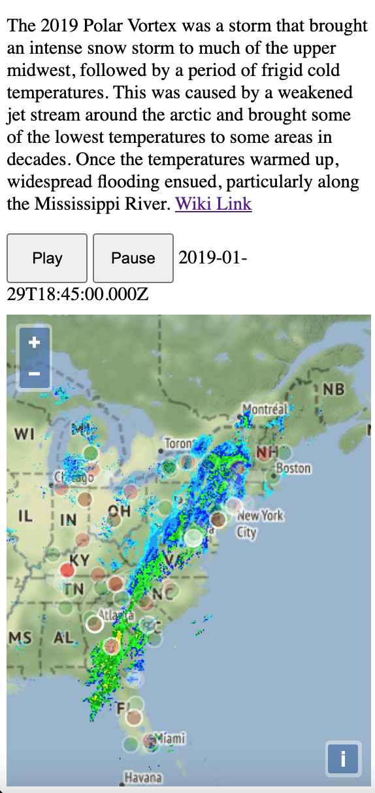

This series is me chronicling my adventure making a data pipeline. This pipe is outlined on GitHub here in the readme: https://github.com/DavidLeifer/polarbearGIS
This is the ninth part in a series used to build my website: https://davidjleifer.com/
Part 1: https://www.davidjleifer.com/blogs/part1.html
Part 2: https://www.davidjleifer.com/blogs/part2.html
Part 3: https://www.davidjleifer.com/blogs/part3.html
Part 4: https://www.davidjleifer.com/blogs/part4.html
Part 5: https://www.davidjleifer.com/blogs/part5.html
Part 6: https://www.davidjleifer.com/blogs/part6.html
Part 7: https://www.davidjleifer.com/blogs/part7.html
Part 8: https://www.davidjleifer.com/blogs/part8.html
Part 10: https://www.davidjleifer.com/blogs/part10.html
Part 11: https://www.davidjleifer.com/blogs/part11.html
Part 12: https://www.davidjleifer.com/blogs/part12.html
Part 13: https://www.davidjleifer.com/blogs/part13.html
We are going to compare the sentiment of Twitter data collected via Tweepy during the 2019 Polar Vortex with radar data from the same storm. The 2019 Polar Vortex was a storm that brought an intense snow storm to much of the lower 48, followed by a period of frigid cold temperatures. This was caused by a weakened jet stream around the arctic and brought some of the lowest temperatures to areas in decades. Once the temperatures warmed up, widespread flooding ensued, particularly along the Mississippi River valley where gnats swarmed in droves.
Step 1: Connecting to the Stream and Harvesting Data
One drawback of using Tweepy is that you have to be recording while the tweets are coming in, as it is prohibitively expensive to buy historical Twitter data. This can be done by connecting to the API with a Twitter developer account and bouncing back and forth between two nearly identical collection scripts when the API shuts the collecting script down. You will need a consumer_key, consumer_secret, access_token, and access_token_secret. This can be done through Twitter: https://developer.twitter.com/en/apply-for-access.
Then create a script containing this code and replace the XXX with your developer secrets. This was developed on Python 3.7, so async is actually is_async, since async is an invalid argument name. I am unsure what it would be post 3.7 but pre 3.7 we used async.
# this script is the same as the other one
# except for the access_ and consumer_ keys and tokens
# Import the necessary methods from tweepy library
from tweepy.streaming import StreamListener
from tweepy import OAuthHandler
from tweepy import Stream
from datetime import datetime as dt
import os
import sys
import logging
import time
import subprocess
python_program = '/Users/davidleifer/Desktop/Geog531/final_project/data_collection/energyhashtag1w.py'
the_other_python_script = '/Users/davidleifer/Desktop/Geog531/final_project/data_collection/energyhashtag2w.py'
logfilename = 'energy' + dt.now().strftime("%Y%m%d%H%M%S") + '.log'
logging.basicConfig(filename=logfilename, format='%(asctime)s %(message)s', datefmt='%m/%d/%Y %I:%M:%S %p', level=logging.INFO)
# Variables that contains the user credentials to access Twitter API
consumer_key = "xxx"
consumer_secret = "xxx"
access_token = "xxx"
access_token_secret = "xxx"
# This is a basic listener that writes received tweets to files.
# Each file contains max 10000 tweets
class MyListener(StreamListener):
MAINFILENAME = 'energy'
MAXTWEETSINFILE = 10000
def __init__(self, api=None):
self.api = api
super(StreamListener, self).__init__()
self.tweets_count = 0
self.current_file = self.get_file()
self.previous_file = self.current_file
self.rate_limit_exceeded = False
def on_data(self, data):
self.tweets_count += 1
self.current_file.write(str(data))
if self.tweets_count > MyListener.MAXTWEETSINFILE:
self.previous_file.close()
self.current_file = self.get_file()
self.tweets_count = 0
return True
def on_exception(self, exception):
print("on_exception in energyhashtag1w.py on " + dt.now().strftime("%Y%m%d%H%M%S"))
logging.warn('on_exception in energyhashtag1w.py')
self.running = False
subprocess.call([sys.executable, python_program, the_other_python_script])
def on_error(self, status):
print("on_error in energyhashtag1w.py on " + dt.now().strftime("%Y%m%d%H%M%S"))
self.current_file.close()
if status == 420:
logging.warn('rate limit exceeded.')
self.rate_limit_exceeded = True
logging.warn('on_error in energyhashtag1w.py with status code ' + str(status))
self.running = False
subprocess.call([sys.executable, python_program, the_other_python_script])
def get_file(self):
name = MyListener.MAINFILENAME + dt.now().strftime("%Y%m%dT%H%M%S")
name += '.txt'
return open(name, 'a')
def stop_stream(stream):
stream.listener.stop()
stream.disconnect()
stream.listener.current_file.close()
if __name__ == '__main__':
stream = None
try:
#This handles Twitter authetification and the connection to
# Twitter Streaming API
l = MyListener()
auth = OAuthHandler(consumer_key, consumer_secret)
auth.set_access_token(access_token, access_token_secret)
stream = Stream(auth, l)
#This line filter Twitter Streams to capture data by keywords
stream.filter(track=['#weather','#polarvortex','#rain','#wind','#coldweather','#winter',
'#degree','#winterweather','#temperature','#snow','#cold','#freezing',
'#temp','#storm'],is_async=True,stall_warnings=True)
except:
# when exceptions occur, the program did not go here
logging.warning("main try except MyException")
if stream is not None:
stop_stream(stream)
# hard-coded the path of the other script
# os.execv('/home/dxiong/socialmedia/energyhashtag2.py', sys.argv)Then we have to make a second one. Notice how we are really only changing the “on_error” and “on_exception” functions.
# this script is the same as the other one
# except for the access_ and consumer_ keys and tokens
# Import the necessary methods from tweepy library
from tweepy.streaming import StreamListener
from tweepy import OAuthHandler
from tweepy import Stream
from datetime import datetime as dt
import os
import sys
import logging
import time
import subprocess
python_program = '/Users/davidleifer/Desktop/Geog531/final_project/data_collection/energyhashtag1w.py'
the_other_python_script = '/Users/davidleifer/Desktop/Geog531/final_project/data_collection/energyhashtag2w.py'
logfilename = 'energy' + dt.now().strftime("%Y%m%d%H%M%S") + '.log'
logging.basicConfig(filename=logfilename, format='%(asctime)s %(message)s', datefmt='%m/%d/%Y %I:%M:%S %p', level=logging.INFO)
# Variables that contains the user credentials to access Twitter API
consumer_key = "XXX"
consumer_secret = "XXX"
access_token = "XXX"
access_token_secret = "XXX"
# This is a basic listener that writes received tweets to files.
# Each file contains max 10000 tweets
class MyListener(StreamListener):
MAINFILENAME = 'energy'
MAXTWEETSINFILE = 10000
def __init__(self, api=None):
self.api = api
super(StreamListener, self).__init__()
self.tweets_count = 0
self.current_file = self.get_file()
self.previous_file = self.current_file
self.rate_limit_exceeded = False
def on_data(self, data):
self.tweets_count += 1
self.current_file.write(str(data))
if self.tweets_count > MyListener.MAXTWEETSINFILE:
self.previous_file.close()
self.current_file = self.get_file()
self.tweets_count = 0
return True
def on_exception(self, exception):
print("on_exception in energyhashtag2w.py on " + dt.now().strftime("%Y%m%d%H%M%S"))
logging.warn('on_exception in energyhashtag2w.py')
self.running = False
subprocess.call([sys.executable, python_program, the_other_python_script])
def on_error(self, status):
print("on_error in energyhashtag2w.py on " + dt.now().strftime("%Y%m%d%H%M%S"))
self.current_file.close()
if status == 420:
logging.warn('rate limit exceeded.')
self.rate_limit_exceeded = True
logging.warn('on_error in energyhashtag2w.py with status code ' + str(status))
self.running = False
subprocess.call([sys.executable, python_program, the_other_python_script])
def get_file(self):
name = MyListener.MAINFILENAME + dt.now().strftime("%Y%m%dT%H%M%S")
name += '.txt'
return open(name, 'a')
def stop_stream(stream):
stream.listener.stop()
stream.disconnect()
stream.listener.current_file.close()
if __name__ == '__main__':
stream = None
try:
#This handles Twitter authetification and the connection to
# Twitter Streaming API
l = MyListener()
auth = OAuthHandler(consumer_key, consumer_secret)
auth.set_access_token(access_token, access_token_secret)
stream = Stream(auth, l)
#This line filter Twitter Streams to capture data by keywords
stream.filter(track=['#weather','#rain','#polarvortex','#wind','#coldweather','#winter',
'#degree','#winterweather','#temperature','#snow','#cold','#freezing',
'#temp','#storm'],async_=True,stall_warnings=True)
except:
# when exceptions occur, the program did not go here
logging.warning("main try except MyException")
if stream is not None:
stop_stream(stream)
# hard-coded the path of the other script
# os.execv('/home/dxiong/socialmedia/energyhashtag1.py', sys.argv)Step 2: Getting Twitter Profile Locations from Tweet ID
Now we have a directory of .json files masquerading as .txt files full of (at max) 10,000 tweets, including the all important TweetID. Now we need to get the location, scrapped from the Twitter user’s profile. The script itself loops over each 10k tweet file, connects to the Twitter API, and gets the profile location of whoever tweeted the text. The script looks like this:
import json, os
import pandas as pd
from glob import glob
import time
import datetime
from collections import Counter
import numpy as np
import unicodedata
import tweepy
# assign the values accordingly
#https://www.geeksforgeeks.org/python-tweepy-getting-the-location-of-a-user/
consumer_key = "xxx"
consumer_secret = "xxx"
access_token = "xxx"
access_token_secret = "xxx"
#for Anaconda python2.7:
#source activate py27
#data has to be in same dir as the file
#path to the current dir
#all_files to the dir of txt files
# Tweets are stored in in file "fname". In the file used for this script,
# each tweet was stored on one line
#fname = 'data2/energy20180322T083452.txt'
path = ''
all_files = glob(os.path.join(path, "*.txt"))
#loop through the all_files dir
for fname in all_files:
df = pd.read_json(fname, lines=True)
print(df['user'].head())
name = [d.get('name') for d in df.user]
id_from_user = [d.get('id') for d in df.user]
df['name'] = name
df['id_from_user'] = id_from_user
#print(df['id_from_user'].head())
#print(df['user'].head())
# authorization of consumer key and consumer secret
auth = tweepy.OAuthHandler(consumer_key, consumer_secret)
auth.set_access_token(access_token, access_token_secret)
api = tweepy.API(auth, wait_on_rate_limit=True)
loc_hodling = []
for i in df['id_from_user']:
try:
# fetching the user
user = api.get_user(i)
# fetching the location
location = user.location
print("The location of the user is : " + location)
loc_hodling.append(location)
except:
loc_hodling.append("nan")
pass
print(loc_hodling)
df['location'] = loc_hodling
df.to_json(fname + '_geo_named.json')Step 3: Geocoding the Named Places with Open Street Map Nominatim and Estimating Sentiment with NLTK
Various corpuses we are using from NLTK need to be downloaded, so if you need help, you can use the following to assist the installation via a python shell:
nltk.download('stopwords')
nltk.download('vader_lexicon')You also need geocoder, which is an open source Python library that simplifies geocoding.
We are looping over all the .json files output by the previous script that contains the profile location. By feeding the profile location value into geocoder, we get X/Y coordinates that can then be plotted on a map.
Then we remove stopwords from the “text” portion of the Tweet and compute the sentiment using the Valence Aware and Dictionary sEntiment Reasoner (VADER). We basically append the data to empty lists and dump the list into our pandas dataframe, because lists are ordered and mutable, thus preserving the order that its sentiment was analyzed.
Here it is in full:
import json, os
import pandas as pd
from glob import glob
import geocoder
import time
import datetime
from collections import Counter
import numpy as np
import unicodedata
from nltk.corpus import stopwords
from nltk.corpus import subjectivity
from nltk.sentiment import SentimentAnalyzer
from nltk.sentiment.util import *
from nltk.sentiment.vader import SentimentIntensityAnalyzer
#create a glob list of the json files in our dir
path = ''
all_files = glob(os.path.join(path, "*.json"))
#loop through the glob list of json files
for data in all_files:
tweets1 = pd.read_json(data, lines=False)
#tweets = pd.read_json((df['data']).to_json(), orient='index')
#tweets1 = pd.read_json((tweets['features']).to_json(), orient='index')
tweets1['coord'] = 'coord'
print(tweets1['location'])
#geocode based on location column
for index, row in tweets1.iterrows():
try:
print(row['location'])
time.sleep(1.01)
g = geocoder.osm(row['location'])
geo = g.latlng
print(geo)
tweets1.at[index, 'coord'] = geo
except:
pass
#split the coord column in y and x columns
#tweets1['coord'] = pd.Series(coord)
tweets1['coord'] = tweets1['coord'].astype(str)
tweets1['coord'] = tweets1['coord'].str.strip('[]')
tweets1['y'], tweets1['x'] = tweets1['coord'].str.split(',', 1).str
#save to a json file
#tweets1.to_json(data + '_geo.json')
print("Geocoded " + data)
#sidestep an error reading a string
tweets1 = tweets1[tweets1['text'].notnull()]
#remove stopwords
stop = stopwords.words('english')
tweets1['tweet_without_stopwords'] = tweets1['text'].apply(lambda x: ' '.join([word for word in x.split() if word not in (stop)]))
stop = ['The','RT','&', '-', 'A', 'https:', '.', '2']
tweets1['tweet_without_stopwords'] = tweets1['tweet_without_stopwords'].apply(lambda x: ' '.join([word for word in x.split() if word not in (stop)]))
#remove periods
tweets1['tweet_without_stopwords'] = tweets1['tweet_without_stopwords'].str.replace('[\.]','')
#remove commas
tweets1['tweet_without_stopwords'] = tweets1['tweet_without_stopwords'].str.replace('[\,]','')
#remove -
tweets1['tweet_without_stopwords'] = tweets1['tweet_without_stopwords'].str.replace('[-]','')
#remove @
tweets1['tweet_without_stopwords'] = tweets1['tweet_without_stopwords'].str.replace('[@]','')
#sentiment analysis using VADER
tweets1["compound"] = ''
tweets1["neg"] = ''
tweets1["neu"] = ''
tweets1["pos"] = ''
sid = SentimentIntensityAnalyzer()
compound_list = []
neg_list = []
neu_list = []
pos_list = []
for user, row in tweets1.T.iteritems():
try:
sentence = unicodedata.normalize('NFKD', tweets1.loc[user, 'tweet_without_stopwords'])
ss = sid.polarity_scores(sentence)
compound_row = ss['compound']
compound_list.append(compound_row)
print(compound_row)
neg_row = ss['neg']
neg_list.append(neg_row)
neu_row = ss['neu']
neu_list.append(neu_row)
pos_row = ss['pos']
pos_list.append(pos_row)
#print(tweets1['compound'])
#tweets1.at(user, 'neg') = ss['neg']
#tweets1.at(user, 'neu') = ss['neu']
#tweets1.at(user, 'pos') = ss['pos']
except:
compound_list.append("nan")
neg_list.append("nan")
neu_list.append("nan")
pos_list.append("nan")
print(tweets1.loc[user, 'tweet_without_stopwords'])
tweets1["compound"] = compound_list
tweets1["neg"] = neg_list
tweets1["neu"] = neu_list
tweets1["pos"] = pos_list
#print a positive message and save the file
print("Sentiment analyzed " + data)
tweets1.to_json(data + '_geo_sent.json')Step 4: Putting the Data into One CSV and Selecting by Location
Now we need to write a script that puts all the data together. We will accomplish this with Glob, pandas, and list comprehensions. This needs to be run within the directory holding all of the json files:
import os, json import pandas as pd from glob import glob #https://stackoverflow.com/questions/20906474/import-multiple-csv-files-into-pandas-and-concatenate-into-one-dataframe path = '/Users/davidleifer/Documents/20170101-20190604/Geog531/final_project/data' all_files = glob(os.path.join(path, "*.json")) df_from_each_file = (pd.read_json(f, lines=False) for f in all_files) df = pd.concat(df_from_each_file) print(df) filename = '/Users/davidleifer/Documents/20170101-20190604/Geog531/final_project/data/polarVortex_geocoded.csv' df.to_csv(filename, index=False, encoding='utf-8')
Then we need to select the points over the timeframe of the storm and over the location of the storm. I prepared a merged vector layer of the Eastern half of the United States using QGIS. We will use Geopandas sjoin to select the appropriate data point data. After that, the geopandas dataframe will be filtered to a manageable file size with a time mask. Then it is saved as a geojson file.
import os, json
import pandas as pd
from glob import glob
import geopandas as gpd
from geopandas import GeoDataFrame
from shapely.geometry import Point
import fiona
import matplotlib.pyplot as plt
#csv as geopandas AKA gdf
df = pd.read_csv('/Users/davidleifer/Documents/20170101-20190604/Geog531/final_project/data/polarVortex_geocoded.csv')
df['x'] = pd.to_numeric(df['x'],errors='coerce')
df['y'] = pd.to_numeric(df['y'],errors='coerce')
geometry = [Point(xy) for xy in zip(df.x, df.y)]
crs = ("epsg:4326")
df = df.drop(['x', 'y'], axis=1)
geo_df = GeoDataFrame(df, crs=crs, geometry=geometry)
gdf = geo_df.to_crs("epsg:4269")
pr = gdf.crs
print(pr)
# Read vector data in as GeoDataFrame AKA poly
poly1 = gpd.read_file("/Users/davidleifer/Documents/20170101-20190604/Geog531/final_project/data/EastCoast.shp")
poly = poly1.loc[poly1['NAME'] == "Kentucky"]
pr = poly.crs
print(pr)
#tweets2 = gdf.within(poly)
#mask = gdf[gdf.geometry.within(poly)]
intersect = gpd.sjoin(gdf, poly, how='inner', op='within', lsuffix='left', rsuffix='right')
intersect.plot()
plt.show()
#make intersect created_at column to_datetime and round to 15 min increment
intersect['created_at'] = pd.to_datetime(intersect['created_at'])
intersect['created_at_round'] = intersect['created_at'].dt.round('15min')
intersect = intersect.to_crs("epsg:4326")
pr = intersect.crs
print(pr)
intersect = intersect.sort_values(by=['created_at_round'], ascending=True)
intersect['created_at_round'] = pd.to_datetime(intersect['created_at_round'])
#print(intersect)
#print(intersect.dtypes)start_date = '2019-01-29 18:30:00'
end_date = '2019-01-29 22:30:00'
mask = (intersect['created_at_round'] > start_date) & (intersect['created_at_round'] <= end_date)
intersect = intersect.loc[mask]
print(intersect)
#save as a GeoJSON file
intersect.to_file("/Users/davidleifer/Documents/20170101-20190604/Geog531/final_project/data/polarVortex_rounded_small.geojson", driver="GeoJSON")Step 5: Creating an Animated Web Application with npm, openlayers v6, and parcel
Now we need a way to animate the time component of our “created_at_round” field of the tweets and show the radar of part of the storm. We will also be styling the points based on the “compound” score from our sentiment analysis. Here is the index.html file:
<!DOCTYPE html>
<html lang="en">
<head>
<meta charset="UTF-8">
<title>WMS Time</title>
<meta http-equiv="Content-Type" content="text/html; charset=utf-8" />
<meta name="description" content="Polar Vortex" />
<meta name="keywords" content="polar vortex,cluster,animation,layer,selection,animate,animated clusters,openlayers" />
<!-- android -->
<meta name="mobile-web-app-capable" content="yes">
<!-- iOS -->
<meta name="apple-mobile-web-app-capable" content="yes">
<meta name="apple-mobile-web-app-status-bar-style" content="translucent-black">
<meta name="format-detection" content="telephone=no" />
<meta name="msapplication-tap-highlight" content="no" />
<!-- WARNING: for iOS 7, remove the width=device-width and height=device-height attributes. See https://issues.apache.org/jira/browse/CB-4323 -->
<meta name="viewport" content="user-scalable=no, initial-scale=1, maximum-scale=1, minimum-scale=1" />
<!-- Pointer events polyfill for old browsers, see https://caniuse.com/#feat=pointer -->
<script src=other.js></script>
<style>
.map {
width: 100%;
height:400px;
}
.controls{
width: 100%;
height: 69px;
}
</style>
</head>
<body>
<div>
<H1>2019 Polar Vortex</H1><br>
<H3>This map displays timeseries radar data and sentiment analysis of geolocated tweets on January 29th from 18:45 until 22:00.</H3><br>
<p>The 2019 Polar Vortex was a storm that brought an intense snow storm to much of the upper midwest, followed by a period of frigid cold temperatures. This was caused by a weakened jet stream around the arctic and brought some of the lowest temperatures to some areas in decades. Once the temperatures warmed up, widespread flooding ensued, particularly along the Mississippi River where gnats swarmed. <a href="https://en.wikipedia.org/wiki/January%E2%80%93February_2019_North_American_cold_wave">Wiki Link</a>
</p>
</div>
<div class="controls" role="group" aria-label="Animation controls">
<button id="play" type="button" style="height:42.0px; width:69px">Play</button>
<button id="pause" type="button" style="height:42.0px; width:69px">Pause</button>
<span id="info"></span>
</div>
<div id="map" class="map"></div>
<script src="main.js"></script>
</body>
</html>The main.js file uses a variety of functions to accomplish our goals. We are using parcel to package the files together and use imports to include various components of the OpenLayers lib.
After that, the first function threeHoursAgo() returns our desired date. Then we hold that function in a var called “startDate”. We also set vars for “frameRate”, define the “extent”, and the “animationID”.
import 'ol/ol.css';
import Map from 'ol/Map';
import Stamen from 'ol/source/Stamen';
import TileLayer from 'ol/layer/Tile';
import TileWMS from 'ol/source/TileWMS';
import GeoJSON from 'ol/format/GeoJSON';
import VectorLayer from 'ol/layer/Vector';
import VectorSource from 'ol/source/Vector';
import Layer from 'ol/layer/Layer';
import View from 'ol/View';
import {getCenter} from 'ol/extent';
import {transformExtent} from 'ol/proj';
import {transform} from 'ol/proj';
import 'regenerator-runtime/runtime'
import polarVortex_intersect_rounded from '../data/polarVortex_rounded_small.geojson';
function threeHoursAgo() {
return new Date("2019-01-29T12:30:00");
}
var extent = transformExtent([-126, 24, -66, 50], 'EPSG:4326', 'EPSG:3857');
var startDate = threeHoursAgo();
var frameRate = 0.5; // frames per second
var animationId = null;Notice how we have to import polarVortex_intersect_rounded from ‘../data/polarVortex_rounded_small.geojson’; It’s a feature not a bug! We use this point geojson file in a new VectorSource defined in a const called point_source. We use point_source to create a new VectorLayer as a const called points. We also create a const for basemap and add a TileLayer with a new Stamen as the source. The radar const is defined as a TileLayer with our previously defined extent and source as a TileWMS from Iowa State Mesonet.
const point_source = new VectorSource({
url: polarVortex_intersect_rounded,
format: new GeoJSON(),
});
const basemap = new TileLayer({
source: new Stamen({
layer: 'terrain',
}),
});
const points = new VectorLayer({
source: point_source,
});
const radar = new TileLayer({
extent: extent,
source: new TileWMS({
attributions: ['Iowa State University'],
url: 'https://mesonet.agron.iastate.edu/cgi-bin/wms/nexrad/n0r-t.cgi',
params: {'LAYERS': 'nexrad-n0r-wmst'},
}),
});Then we define the map var as a new map with a new view. We also use addLayer() to add the const to the map var:
var map = new Map({
//layers: layers,
target: 'map',
view: new View({
center: transform([-77.3765, 38.1667], 'EPSG:4326', 'EPSG:3857'),
zoom: 4,
}),
});
/* Add to map */
map.addLayer(points);
map.addLayer(basemap);
map.addLayer(radar);Then a couple of functions are defined to set the time component. One is updateInfo(), which has a var named el that gets the time id from the html based on “info”. This el variable has innerHTML applied to it and is set to the startDate var as an ISO string.
function updateInfo() {
var el = document.getElementById('info');
el.innerHTML = startDate.toISOString();
}The second function is called setTime(). The startDate var has setMinutes() applied to it which increments the device by 15. Then an if clause asks if startDate is bigger than a new null Date() object. If it is, startDate is set to the threeHoursAgo() function. After that, the radar layer has its parameters updated with updateParams, setting the “TIME” filled to an ISO string of startDate. Then the setTime function is activated.
function setTime() {
startDate.setMinutes(startDate.getMinutes() + 15);
if (startDate > new Date()) {
startDate = threeHoursAgo();
}
radar.getSource().updateParams({'TIME': startDate.toISOString()});
updateInfo();
}
setTime();A var called stop defines a function where if the animationId is not null, then tell the window to clear the interval and set animationId back as null and stop the animation. This stop var gets called in another function called play. Then animationId is defined as telling the window to setInterval to the function setTime(), while the second parameter of the setInterval method is set to 1000 divided by our frame rate (.5).
var stop = function () {
if (animationId !== null) {
window.clearInterval(animationId);
animationId = null;
}
};
var play = function () {
stop();
animationId = window.setInterval(setTime, 1000 / frameRate);
};A var is defined as startButton, which is set to the “play” element. An addEventListener methods are defined to activate on click. It activates the play() function and controls the radar portion of the map display.
We also define a stopButton variable which is defined as the pause element. An addEventListener method is added to activate the stop function on click.
Then we updateInfo()
var startButton = document.getElementById('play');
startButton.addEventListener('click', play, false);
var stopButton = document.getElementById('pause');
stopButton.addEventListener('click', stop, false);
updateInfo();Then we define some vars that will be our style for our points features. We make new white, green, and red Fill functions. Then we apply these Fill vars to some new Style vars. These will be added to our layers later.
// style function
var white = new Fill({color: 'white'})
var green = new Fill({color: 'green'})
var red = new Fill({color: 'red'});
var white_style = new Style({
image: new Circle({
radius: 7,
fill: white,
stroke: new Stroke({
color: [255,255,255], width: 2
})
})
});
var green_style = new Style({
image: new Circle({
radius: 7,
fill: green,
stroke: new Stroke({
color: [255,255,255], width: 2
})
})
});
var red_style = new Style({
image: new Circle({
radius: 7,
fill: red,
stroke: new Stroke({
color: [255,255,255], width: 2
})
})
});Now we make a function called resolveAfter2Seconds. This is despite that we are resolving in a second.
But it is a promise. A promise that will help halt the execution of our code until a set time!
Also we create an addEventListener to activate the async function f1 when the radar layer changes.
//Proimise and await. who came up with that
function resolveAfter2Seconds(x) {
return new Promise(resolve => {
setTimeout(() => {
resolve(x);
}, 1000);
radar.addEventListener('change', f1, false);
});
}And what is a promise without an await? Next we make an async function called f1() which holds the var x and the aforementioned await and promise function called resolveAfter2Seconds. After that, we remove the points layer. The reason we have to add the points is because we have to read in all of the geojson features.
Then we define a source var as the points.getSource() method, which is something from openlayers VectorLayer. We continue by accessing the “uidIndex_” and setting that to a var called uidIndex_.
Then a var called el gets the time info in our HTML.
async function f1() {
var x = await resolveAfter2Seconds(10);
map.removeLayer(points);
var source = points.getSource();
var uidIndex_ = source["uidIndex_"];
var el = document.getElementById('info').textContent;Still in this function, we define an extra string to help with our date format. Then comes a for loop that loops over the “uidIndex_”. It creates an example var that holds each “uidIndex_” as an iterated agent. The we get the “values_” field and call it values_. Then we get the field “created_at_round” from our values_ var. We concat that extra piece of string onto this field. Then we create a new VectorSource() and call it splice.
var extra = ".000Z";
for (var i in uidIndex_) {
var example = uidIndex_[i];
var values_ = example['values_'];
var created_at_round = values_['created_at_round'];
var created_at_round_concat = created_at_round.concat(extra);
var splice = new VectorSource();Still in this f1() function, we get the values_ of “compound”, which is our sentiment analysis score from -1 to 1. Then we create an if statement that checks the created_at_round_concat field with the value of our id element in the HTML, also known as var el. If it is indeed true, we add that feature onto the var splice, which is the new VectorSource. Then we create a const called splice_points which is a new VectorLayer() and define the source parameter as our splice. Notice how there is no style yet.
Then we make a nested if/else if/else statement. Neutral tweets get styled with setStyle() as white, positive tweets get green style, and negative tweets get red style. Then this VectorLayer gets added to the map.
var compound = values_['compound']
if (created_at_round_concat === el) {
splice.addFeature(example);
console.log(splice);
const splice_points = new VectorLayer({
source: splice,
opacity: .23
});
if (compound === 0) {
splice_points.setStyle(white_style)
}
else if (compound > 0) {
splice_points.setStyle(green_style)
}
else{
splice_points.setStyle(red_style)
}
map.addLayer(splice_points);
} else {
//console.log("False");
};
};
};Altogether that looks like this.
import 'ol/ol.css';
import Map from 'ol/Map';
import Stamen from 'ol/source/Stamen';
import TileLayer from 'ol/layer/Tile';
import TileWMS from 'ol/source/TileWMS';
import GeoJSON from 'ol/format/GeoJSON';
import VectorLayer from 'ol/layer/Vector';
import VectorSource from 'ol/source/Vector';
import Layer from 'ol/layer/Layer';
import View from 'ol/View';
import {getCenter} from 'ol/extent';
import {transformExtent} from 'ol/proj';
import {transform} from 'ol/proj';
import {Style, Fill, Stroke, Circle} from 'ol/style';
import 'regenerator-runtime/runtime';
import polarVortex_intersect_rounded from '../data/polarVortex_rounded_small.geojson';
function threeHoursAgo() {
return new Date("2019-01-29T12:30:00");
}
var extent = transformExtent([-126, 24, -66, 50], 'EPSG:4326', 'EPSG:3857');
var startDate = threeHoursAgo();
var frameRate = .5; // frames per second
var animationId = null;
//console.log(Math.round(Date.now() / 3600000) * 3600000 - 3600000 * 17271);
const point_source = new VectorSource({
url: polarVortex_intersect_rounded,
format: new GeoJSON(),
});
const basemap = new TileLayer({
source: new Stamen({
layer: 'terrain',
}),
});
const points = new VectorLayer({
source: point_source,
});
const radar = new TileLayer({
extent: extent,
source: new TileWMS({
attributions: ['Iowa State University'],
url: 'https://mesonet.agron.iastate.edu/cgi-bin/wms/nexrad/n0r-t.cgi',
params: {'LAYERS': 'nexrad-n0r-wmst'},
}),
});
var map = new Map({
//layers: layers,
target: 'map',
view: new View({
center: transform([-77.3765, 38.1667], 'EPSG:4326', 'EPSG:3857'),
zoom: 4,
}),
});
/* Add to map */
map.addLayer(points);
map.addLayer(basemap);
map.addLayer(radar);
function updateInfo() {
var el = document.getElementById('info');
el.innerHTML = startDate.toISOString();
}
function setTime() {
startDate.setMinutes(startDate.getMinutes() + 15);
if (startDate > new Date()) {
startDate = threeHoursAgo();
}
radar.getSource().updateParams({'TIME': startDate.toISOString()});
updateInfo();
}
setTime();
var stop = function () {
if (animationId !== null) {
window.clearInterval(animationId);
animationId = null;
}
};
var play = function () {
stop();
animationId = window.setInterval(setTime, 1000 / frameRate);
};
var startButton = document.getElementById('play');
startButton.addEventListener('click', play, false);
//startButton.addEventListener('click', () => {
// f1().then();
//}, false);
var stopButton = document.getElementById('pause');
stopButton.addEventListener('click', stop, false);
updateInfo();
// style function
var white = new Fill({color: 'white'})
var green = new Fill({color: 'green'})
var red = new Fill({color: 'red'});
var white_style = new Style({
image: new Circle({
radius: 7,
fill: white,
stroke: new Stroke({
color: [255,255,255], width: 2
})
})
});
var green_style = new Style({
image: new Circle({
radius: 7,
fill: green,
stroke: new Stroke({
color: [255,255,255], width: 2
})
})
});
var red_style = new Style({
image: new Circle({
radius: 7,
fill: red,
stroke: new Stroke({
color: [255,255,255], width: 2
})
})
});
//Proimise and await. who came up with that, its a(time)sync function
function resolveAfter2Seconds(x) {
return new Promise(resolve => {
setTimeout(() => {
resolve(x);
}, 1000);
radar.addEventListener('change', f1, false);
});
};
async function f1() {
var x = await resolveAfter2Seconds(10);
map.removeLayer(points);
var source = points.getSource();
var uidIndex_ = source["uidIndex_"];
var el = document.getElementById('info').textContent;
var extra = ".000Z";
for (var i in uidIndex_) {
var example = uidIndex_[i];
var values_ = example['values_'];
var created_at_round = values_['created_at_round'];
var created_at_round_concat = created_at_round.concat(extra);
var splice = new VectorSource();
//console.log(created_at_round);
//console.log(el);
var compound = values_['compound']
if (created_at_round_concat === el) {
splice.addFeature(example);
const splice_points = new VectorLayer({
source: splice,
opacity: .23
});
if (compound === 0) {
splice_points.setStyle(white_style)
}
else if (compound > 0) {
splice_points.setStyle(green_style)
}
else{
splice_points.setStyle(red_style)
}
map.addLayer(splice_points);
}
};
};
f1();We also create a package.json file to tell npm how to bulid and an other.js file which is just a source file.
{
"name": "wms-time",
"dependencies": {
"ol": "^6.5.0",
"regenerator-runtime": "^0.13.7"
},
"devDependencies": {
"parcel": "^2.0.0-beta.1"
},
"scripts": {
"start": "parcel index.html",
"build": "parcel build --public-url . index.html"
}
}Then we use npm to start or build the files, whichever suits you. This is what I use:
sudo npm start #OR BUILD sudo npm run-script build
Here’s a screenshot:

This series is me chronicling my adventure making a data pipeline. This pipe is outlined on GitHub here in the readme: https://github.com/DavidLeifer/polarbearGIS
This is the ninth part in a series used to build my website: https://davidjleifer.com/
Part 1: https://www.davidjleifer.com/blogs/part1.html
Part 2: https://www.davidjleifer.com/blogs/part2.html
Part 3: https://www.davidjleifer.com/blogs/part3.html
Part 4: https://www.davidjleifer.com/blogs/part4.html
Part 5: https://www.davidjleifer.com/blogs/part5.html
Part 6: https://www.davidjleifer.com/blogs/part6.html
Part 7: https://www.davidjleifer.com/blogs/part7.html
Part 8: https://www.davidjleifer.com/blogs/part8.html
Part 10: https://www.davidjleifer.com/blogs/part10.html
Part 11: https://www.davidjleifer.com/blogs/part11.html